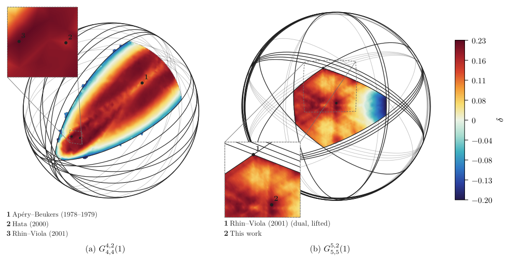
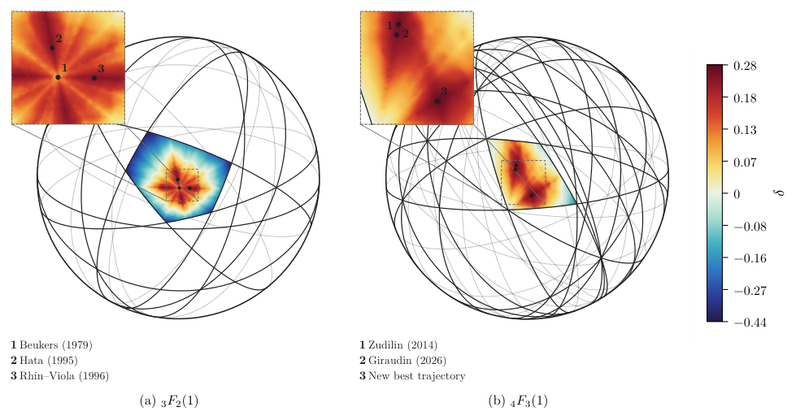

The irrationality-measure bounds for ζ(2), ζ(3) and Aζ(3)+Bζ(4) are formally verified in Lean 4, assuming the prime number theorem, with sources released.
Abstract
Since Apéry's proof of the irrationality of $ζ(3)$, decades of work have explored integrals, hypergeometric identities, and recurrences with exceptional arithmetic properties, to discover the strongest quantitative bounds on irrationality measures for zeta values and related constants. Yet, most findings have relied on specially tailored families of such constructions, making their systematic extension difficult. Here we show how these constructions can be connected and generalized into a common multidimensional structure based on conservative matrix fields (CMFs), enabling a systematic discovery of new irrationality proofs and quantitative bounds for irrationality exponents. CMFs are finite-dimensional cocycles of compatible rational matrix shifts, and are shown to capture all the classical constructions developed since Apéry as one-dimensional trajectories. The initial point encodes the mathematical constants; varying the trajectory within a suitable convergence region produces different approximation schemes for the same constants. We use this structure to improve the irrationality measures of famous constants, yielding for example $μ(ζ(2))<4.62675$ and $μ(ζ(3))<5.4197$, and proving that $1,ζ(3),ζ(4)$ are linearly independent over $\mathbb{Q}$, yielding $μ(Aζ(3)+Bζ(4))<66.3$ for every $(A,B)\in\mathbb{Q}^2\setminus\{(0,0)\}$. The same approach demonstrated over other CMFs provides irrationality proving trajectories for infinitely more mathematical constants. We further construct higher-rank CMFs with explicit initial states for $1,ζ(2),ζ(3),\ldots,ζ(d+1)$, and identify the arithmetic conditions needed to obtain further, higher-order independence results.
Problem
Classical Apéry-type constructions for irrationality proofs of zeta values have relied on specially tailored families of integrals and recurrences, which are hard to extend systematically. It was unclear whether such constructions could still yield new irrationality results.
Approach
Classical constructions are embedded as one-dimensional trajectories in conservative matrix fields (CMFs), which are multidimensional cocycles of compatible rational matrix shifts built from contiguous relations of D-finite functions. Trajectories within a convergence region are searched and optimized for approximation exponents. Proofs identify the limit via dual pairing with special-function CMFs, bound the error decay, and count common factors by exact computation. The main bounds are formalized in Lean 4, assuming the prime number theorem.

Figure 5.2. \delta (numerical) for \zeta(3) on slices of the G^{4,2}_{4,4}(1) (a) and G^{5,2}_{5,5}(1) (b) CMFs.
Results
The method gives μ(ζ(2))<4.62675 and μ(ζ(3))<5.4197, and proves that 1, ζ(3), ζ(4) are linearly independent over Q, with μ(Aζ(3)+Bζ(4))<66.3. It also proves irrationality of the harmonic-weighted Gregory series B(M) for integers M≥7165.

Figure 5.1. \delta (numerical) for \zeta(2) on slices of the {}_{3}F_{2}(1) (a) and {}_{4}F_{3}(1) (b) CMFs.
Constant
Record δ
Discovered δ
ζ(3)
0.222
0.226
ζ(2)
0.252
0.278
G (Catalan)
-0.373
-0.275
Aζ(3)+Bζ(4)
—
0.016
L(2,χ₋₃)
-0.475
-0.060
Record vs. discovered approximation exponents δ (selected, N=8000)